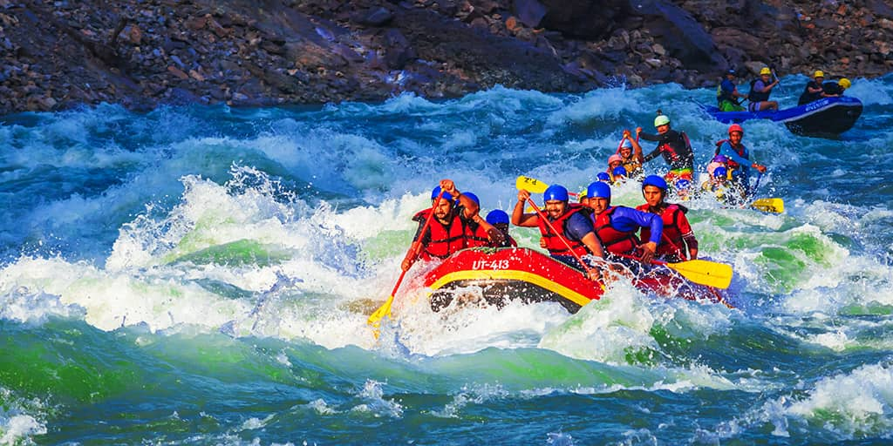

Let River Runners be your guide on
the Arkansas River in Colorado
Embark on the adventure of a lifetime with guided whitewater rafting tours through some of the most stunning valleys and canyons in the world. Whether you’re a beginner seeking a mild introduction to rafting or an experienced rafter looking for the ultimate challenge, we have the perfect trip for you.
Join us for another epic season on half-day, full-day, or multi-day rafting excursions departing daily from Mid-May through Labor Day, 2025. River Runners tours offer something for all skill levels, from gentle floats to heart-pounding rapids.
Located near Buena Vista and Cañon City, our two Colorado whitewater rafting outposts provide convenient access to some of the most scenic and exciting stretches of river in the state. Whether you’re craving the legendary rapids of the Royal Gorge, the natural splendor of Browns Canyon National Monument, or a leisurely Family Float, we have the perfect adventure for you. Don’t miss out—secure your whitewater rafting vacation today!
The Favorites
Intermediate
Browns Canyon
Perfect for families - includes a guide
The river features a range of rapids with names like "Zoom Flume," "Pinball," "Widowmaker," and "Big Drop," each offering its own set of thrills. Expect a mix of wave trains, drops, and narrow passages that create fun splashes and high-energy maneuvering.
Advanced
The Fractions
The rapids here, such as "House Rock," "Browns Hole," and "Widowmaker," are closely spaced and require tight maneuvering, making it a fast-paced run that’s great for those who crave a continuous adrenaline rush.
Perfect for individuals with more experience - guides are optional
Expert
Pine Creek
Perfect for adrenaline rush addicts - must be experienced
The first rapid, often referred to as "The Pine Creek Rapid," is an intimidating Class V drop. It demands precise maneuvering, power paddling, and a strong team effort to navigate its powerful waves, steep drops, and complex boulder gardens.